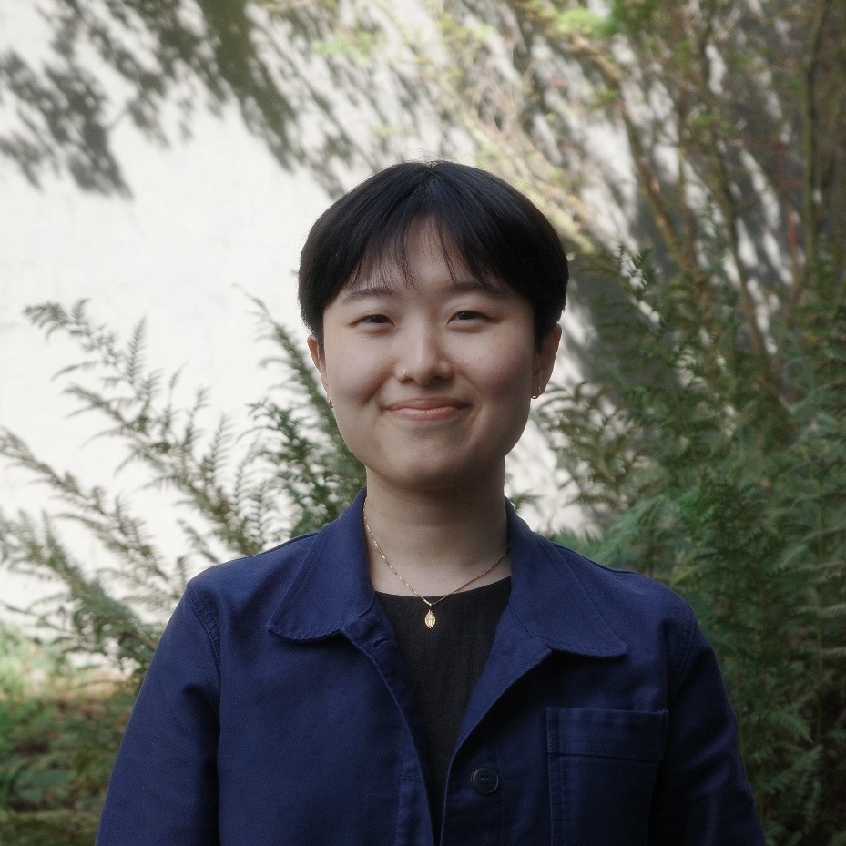

Researcher · Lecturer · Literary Translator

Jin R. Choi, Ph.D. (she/her) is a researcher, university lecturer, and literary translator.
Her research and teaching are in the fields of communication, transnational queer and feminist studies, and critical Korean and Asian studies. She holds a Ph.D. and M.A. in Communication from the University of Maryland.
She translates fiction and nonfiction from Korean to English, with an interest in timely and transformative stories across genres.
Contact
For research, teaching, translation, and collaboration inquiries, email jinrebekahchoi@gmail.com .